CSS cursor（鼠标样式）
在浏览网页的过程中，当我们将鼠标移动到一些元素上时，鼠标的样式会发生相应的改变，例如当鼠标指向文本时，鼠标的样式会变成类似大写字母
除了这些默认的变化外，您还可以通过 CSS 中的 cursor 属性来改变网页中鼠标（光标）的样式，下表中列举了 cursor 属性的可选值：
I的样子；当鼠标指向链接时，鼠标会变成一个小手的形状等。除了这些默认的变化外，您还可以通过 CSS 中的 cursor 属性来改变网页中鼠标（光标）的样式，下表中列举了 cursor 属性的可选值：
| 属性值 | 示意图 | 描述 |
|---|---|---|
| auto | 默认值，由浏览器根据当前上下文确定要显示的光标样式 | |
| default | 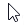 | 默认光标，不考虑上下文，通常是一个箭头 |
| none | 不显示光标 | |
| initial | 将此属性设置为其默认值 | |
| inherit | 从父元素基础 cursor 属性的值 | |
| context-menu | 表示上下文菜单可用 | |
| help | 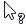 | 表示有帮助 |
| pointer | 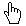 | 表示一个链接 |
| progress | 进度指示器，表示程序正在执行一些处理，但是您仍然可以在该界面进行一些操作（与 wait 不同） | |
| wait |
 |
表示程序繁忙，您应该等待程序指向完成 |
| cell | 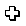 | 表示可以选择一个单元格（或一组单元格） |
| crosshair | 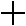 | 一个简单的十字准线 |
| text | 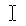 | 表示可以选择的文本 |
| vertical-text | 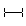 | 表示可以选择的垂直文本 |
| alias | 表示要创建别名或快捷方式 | |
| copy | 表示可以复制某些内容 | |
| move |
 |
表示可以移动鼠标下方的对象 |
| no-drop |
 |
表示所拖动的项目不能放置在当前位置 |
| not-allowed | 表示无法完成某事 | |
| all-scroll |
 |
表示对象可以沿任何方向滚动（平移） |
| col-resize | 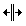 | 表示可以水平调整列的大小 |
| row-resize | 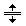 | 表示可以垂直调整行的大小 |
| n-resize |
 |
表示对象的边缘可以向上（向北）移动 |
| e-resize | 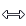 | 表示对象的边缘可以向右（向东）移动 |
| s-resize |
 |
表示对象的边缘可以向下（向南）移动 |
| w-resize |
 |
表示对象的边缘可以向左（向西）移动 |
| ne-resize |
 |
表示对象的边缘可以向上和向右（北/东）移动 |
| nw-resize | 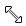 | 表示对象的边缘可以向上和向左（北/西）移动 |
| se-resize |
 |
表示对象的边缘可以向下和向右（向南/向东）移动 |
| sw-resize | 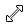 | 表示对象的边缘可以向下和向左（南/西）移动 |
| ew-resize |
 |
表示可以双向调整对象大小的光标 |
| ns-resize | 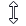 | |
| nesw-resize |
 |
|
| nwse-resize |
 |
|
| zoom-in | 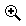 | 表示可以放大某些内容 |
| zoom-out | 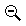 | 表示可以缩小某些内容 |
| grab | 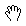 | 表示可以抓取（拖动）某些东西 |
| grabbing | 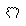 | 表示已经抓取到某些东西 |
| url("") | 自定义光标的样式，括号中的内容为光标图像的源文件路径 |
提示：由于计算机系统的不同，鼠标的样式会存在一定的差异。
【示例】使用 cursor 属性设置网页中光标的样式：
<!DOCTYPE html>
<html>
<head>
<style>
div {
height: 30px;
border: 1px solid green;
margin-top: 10px;
}
.cell {
cursor: cell;
}
.crosshair {
cursor: crosshair;
}
.text {
cursor: text;
}
.vertical-text {
cursor: vertical-text;
}
.alias {
cursor: alias;
}
.copy {
cursor: copy;
}
.move {
cursor: move;
}
.no-drop {
cursor: no-drop;
}
</style>
</head>
<body>
<div class="cell">cursor: cell;</div>
<div class="crosshair">cursor: crosshair;</div>
<div class="text">cursor: text;</div>
<div class="vertical-text">cursor: vertical-text;</div>
<div class="alias">cursor: alias;</div>
<div class="copy">cursor: copy;</div>
<div class="move">cursor: move;</div>
<div class="no-drop">cursor: no-drop;</div>
</body>
</html>
运行上面的代码，然后将鼠标指向不同的 HTML 元素，可以发现当指向不同的元素时鼠标的样式也会发生相应的改变。自定义光标样式
除了可以使用上表中介绍的光标样式外，您也可以使用图像文件来自定义光标的样式，如下所示：cursor: url("custom.gif"), url("custom.cur"), default;
您可以使用 url() 定义多个光标的样式文件，每个 url() 之间使用逗号,分隔，上面示例中 custom.gif、custom.cur 就是自定义的光标文件。需要注意的是，在自定义光标样式时，要在最后定义一个上表中的通用光标样式，防止使用 url() 中定义的光标图像资源失效。提示：.cur 格式是光标文件的标准格式，您可以使用一些在线工具（例如 https://convertio.co/zh/cur-converter/）将 .jpg、.gif 等格式的图像文件转换为 .cur 格式。
关注公众号「站长严长生」，在手机上阅读所有教程，随时随地都能学习。内含一款搜索神器，免费下载全网书籍和视频。

微信扫码关注公众号